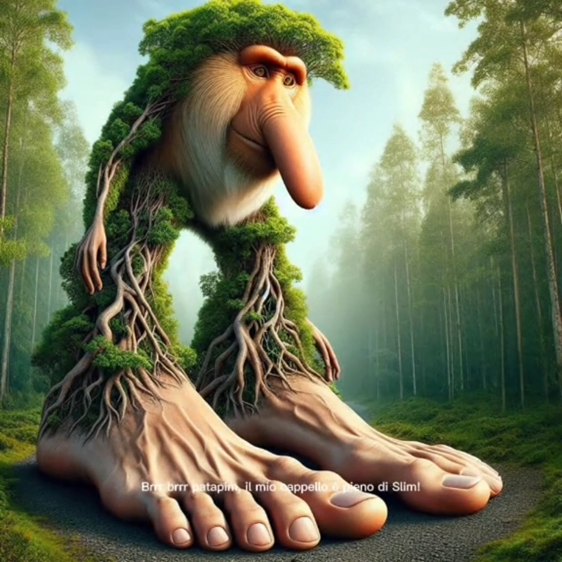

BrainRot's




 22.59.24_888f3977.jpg)
 23.01.48_c8b9b153.jpg)

Brainrot - Cachacini Brasilini Pingucini
Conheça mais a história do Cachacini Brasilini Pingucini
Leia a históriaHistoria dos Brainrot's
Tung Sahur
Tung Tung Tung Sahur é uma anomalia aterrorizante em forma de tambor de patrulha noturna. Diz a lenda que se você for chamado por Sahur três vezes e não responder, ele aparecerá e o assombrará. Seu som lembra o de um tambor, "tung tung tung". Foi descoberto pela primeira vez em Pentungan Sahur Pos Ronda Malam. Embora as pessoas o confundam com um "animal podridão cerebral italiano", na verdade ele é um podridão cerebral indonésio. Sahur é conhecido por empunhar um taco de madeira característico e pode evoluir para uma segunda forma, como visto em sua luta com Brr brr Patapim . Ele é um dos personagens com cérebro podre mais conhecidos e amados, conquistando o primeiro lugar em muitos rankings exclusivos de animais com cérebro podre.
Na primeira batalha das Guerras Croco-Avianas , Tung Tung Tung Sahur é um espectador, pois todos têm muito medo dele para convocá-lo ao campo de batalha. Rumores afirmam que no final da segunda guerra, os crocos, liderados por Bombardiro Crocodilo , tentaram convocá-lo depois que a tentativa de assassinato de Bombombini Gusini por Tralelo Tralala falhou, como último recurso. Eles tiveram sucesso, e Tung Tung Tung Sahur com Bombardiro Crocodilo atacou Lirili Larila e matou Bombombini Gusini. Após a guerra, ele foi condenado à morte, mas escapou. Ele está atualmente sendo caçado pelos Assassinos Cybertruck após um encontro com Piccione Macchina , que confirmou que Sahur é uma entidade glitch.
Ballerina Cappuccina
No coração de uma charmosa cafeteria mágica chamada La Tazza Incantata, onde os grãos de café sussurram segredos e os doces cantam canções de boas-vindas, vivia uma criatura única: a Bailarina Cappucina. Com o corpo elegante de uma bailarina clássica e uma cabeça em forma de xícara de cappuccino, Cappucina não era uma simples criação do acaso. Ela nasceu de um desejo profundo de alegria, feito por uma velha barista chamada Dona Rosa, que queria que seus cafés trouxessem mais do que energia — ela queria que trouxessem encanto.
Todas as manhãs, quando o primeiro raio de sol tocava a vitrine da cafeteria, Cappucina despertava. O vapor do leite quente em sua cabeça se misturava ao aroma de café recém-passado, e ela começava sua rotina: uma dança delicada entre mesas e cadeiras, seus passos suaves aquecendo os corações de todos que assistiam. Mas Cappucina tinha um sonho maior. Queria dançar fora da cafeteria, nos palcos do mundo. No entanto, ela sabia que sua magia só existia enquanto o café estivesse quente — e o mundo lá fora era frio, incerto e corrido demais para esperar uma xícara aquecer novamente.
Chimpazine Bananine
Na selva de Zungalu, onde as árvores tocam o céu e os rios cantam melodias antigas, existe uma lenda que os animais sussurram apenas em noites de lua cheia: a lenda de Chimpazino Bananine, o protetor da fruta sagrada. Chimpazino não era um macaco comum. Sua origem estava envolta em mistério. Dizem que nasceu no coração de uma árvore milenar, quando um raio mágico atingiu uma bananeira durante uma tempestade encantada. Do tronco surgiu ele — metade chimpanzé, metade banana — com casca dourada, pelos verdes como musgo e olhos que viam além do tempo.
Apesar de sua aparência curiosa, Chimpazino era reverenciado por todas as criaturas da floresta. Não apenas por sua força e inteligência, mas por sua missão: proteger o Equilibanano — uma fruta lendária que mantinha o equilíbrio da vida no ecossistema de Zungalu. Se alguém colhesse a fruta antes da hora certa, toda a floresta murcharia. Mas nem todos respeitavam a floresta... Certo dia, um grupo de exploradores ambiciosos adentrou a selva, guiados por mapas e ganância. Eles queriam o Equilibanano para vendê-lo como fonte de juventude. O chão tremeu com suas máquinas, os pássaros fugiram em revoada, e os animais se esconderam com medo.
Lirili Larila
Muito além dos desertos que conhecemos, onde o tempo não segue os ponteiros e os relógios flutuam como balões, existe uma criatura rara, tão antiga quanto os próprios grãos de areia: Lalari Larirá, o elefante-cacto que caminha entre os segundos. Lalari nasceu quando o tempo parou por um instante — não um minuto, não um dia, mas apenas um suspiro. Foi nesse lapso silencioso que o deserto, cansado de ser ignorado, decidiu criar um guardião. Uniu a força de um elefante, a resistência de um cacto e os passos lentos de quem entende que tudo tem sua hora.
Com pernas espinhosas como colunas de saguaro e sandálias místicas que o protegem do calor das decisões apressadas, Larirá caminha devagar, mas nunca para. Seu corpo é lar para passarinhos do tempo, e em sua tromba repousam os ecos de eras esquecidas. Ele aparece apenas para aqueles que perderam a noção do tempo — os apressados, os ansiosos, os que vivem correndo e esquecem de viver. Larirá não fala, mas sua presença ensina: o tempo não é um inimigo, é um aliado... desde que você aprenda a pisar com calma. Quando um viajante solitário se perde no deserto das preocupações, Larirá surge entre os cactos, acompanhado de relógios flutuantes e ventos que sopram memórias. Com um toque de sua tromba, ele desacelera os pensamentos e faz o viajante lembrar que há beleza na pausa, sabedoria na espera e cura no passo lento.
Brr Brr Patapim
No coração da Floresta dos Sussurros, onde as árvores trocam segredos e o vento canta canções antigas, vive uma criatura tão antiga quanto o primeiro broto do mundo: Brr Brr Patapim, o gigante de pés-raízes e alma serena. Com um nariz digno de histórias engraçadas e pés tão grandes que podem cobrir lagos inteiros, Patapim caminha devagar pelas trilhas da floresta, carregando em seus passos a memória viva do solo. Seus cabelos são ramos e suas pernas, troncos e raízes entrelaçadas que se alimentam da terra, conectando-o a cada canto da natureza.
Mas Patapim não nasceu assim. Ele era, há muito tempo, um macaco curioso chamado Pim. Um dia, escalando a maior árvore da floresta em busca da fruta do eco — que repetia os sentimentos de quem a comia —, Pim mordeu a fruta e ouviu sua própria alma dizer: "Quero parar de correr... e começar a crescer." A floresta, ouvindo o desejo mais profundo de Pim, o transformou em seu guardião. Assim surgiu Brr Brr Patapim — o som do vento (brr brr) e o som de seus passos pesados (patapim) que fazem a terra vibrar.
Trallallero Trallallà
Numa manhã de maré alta e céu sem nuvens, as ondas sussurraram algo novo à costa: Trallallero Trallallà, o tubarão com pernas de atleta e tênis de corrida, que trocou os mares profundos pela liberdade da areia quente. Ninguém sabe exatamente como isso aconteceu. Uns dizem que Trallallero era o tubarão mais curioso do oceano, sempre olhando para a praia e se perguntando como seria caminhar, saltar e... dançar. Outros juram que ele ganhou suas pernas ao vencer uma aposta contra Netuno em uma corrida submarina.
Mas a verdade é que Trallallero nasceu do desejo de explorar o mundo acima do nível do mar. Com suas poderosas pernas musculosas e seus tênis azuis turbinados, ele agora corre pelas praias, deixando pegadas profundas e admiradores por onde passa. Diferente de outros tubarões, ele não caça — ele participa de maratonas. Sim, maratonas. E ele é imbatível! Seus pulmões foram substituídos por um sistema de resfriamento natural que o mantém hidratado mesmo sob o sol escaldante. Seu sorriso, cheio de dentes afiados, assusta os desavisados, mas logo todos percebem que Trallallero é só... um cara do bem, apaixonado por esportes e um pouco exibido.
Bombardiono Crocodillo
Há muitos anos, quando as guerras deixaram de ser travadas com exércitos e passaram a ser disputadas por máquinas de poder absoluto, nasceu a arma mais temida do mundo tropical: o Bombardino Crocodillo. Diferente de qualquer avião, o Bombardino não foi construído em laboratório nem criado por cientistas. Diz a lenda que ele nasceu de um ritual proibido, quando um general enlouquecido tentou unir a força bruta de um crocodilo do Pantanal com um bombardeiro americano abandonado da Segunda Guerra. No meio de uma tempestade elétrica, o monstro despertou: um avião com pele escamosa, dentes de aço afiados como navalhas e olhos que viam além das nuvens. Suas turbinas rugiam como trovões, e a cada bombardeio ele soltava granadas que transformavam cidades em pântanos radioativos. O Bombardino Crocodillo tinha inteligência. Escolhia alvos. Gostava de calor, cheiro de carne grelhada e caos.
Ele voava por cima de praias lotadas, florestas intocadas e cidades cheias de luzes, sempre com a boca aberta, como se saboreasse o pavor. Mas o que ninguém sabia era que ele não era mal por natureza. Ele foi preso em seu próprio corpo metálico, aprisionado num pesadelo de guerra pelo tal general. E no fundo daqueles olhos de crocodilo, havia um pedido de socorro. Então surgiu ela: Dra. Solange Brejo, engenheira biomecânica e defensora dos animais híbridos. Depois de anos estudando ruídos nas correntes de vento, ela decifrou os "gritos" do Bombardino. Usando um parapente movido a energia solar e coragem de sobra, ela pousou sobre o dorso do monstro e... conversou com ele. Não com palavras, mas com sons, sinais e música. Tocou um berrante tecnológico com notas de paz, e o Crocodillo tremeu. Chorou. Parou de voar. Suas bombas caíram no mar sem explodir, e pela primeira vez, pousou sem destruir. Desde então, o Bombardino Crocodillo voa como protetor dos céus do sul global, interceptando satélites espiões, afastando drones de guerra e cuspindo rajadas sonoras que confundem radares. Alguns ainda acham que ele é um monstro.
Bombombini Gusini
Muito antes dos drones e caças invisíveis, havia uma lenda nos céus gelados do norte: Bombardino Gusini, a gansa de guerra, um híbrido criado não pela ciência, mas por um erro cósmico durante uma tempestade magnética e um teste militar fracassado. Gusini nasceu quando um míssil experimental colidiu com uma revoada de gansos migratórios durante um eclipse total. Uma explosão abriu uma fenda no céu, e dela saiu ela: com penas de titânio, motores de jato nos flancos, e o olhar sereno de quem já sobreviveu a muitos invernos. Ao contrário do temido Bombardino Crocodillo, Gusini era calma, precisa, e voava em formação com caças como se fosse uma comandante aérea de elite. Seu corpo era blindado como um tanque, mas seu canto — sim, ela cantava — desorientava radares e fazia pilotos dormirem em pleno voo, como um feitiço musical. Seu propósito era claro: interferir em guerras antes que elas começassem. Onde havia tensão, Gusini surgia. Sobrevoava bases militares, desativava bombas com seu sistema biotecnológico de precisão e deixava um único rastro: uma pena metálica no chão com a inscrição "Paz não é fraqueza".
Mas nem todos gostavam dela. O consórcio armamentista conhecido como Vento Negro a via como ameaça. Tentaram capturá-la com aviões supersônicos, satélites armados e até redes de energia magnética. Nada funcionava. Em uma das batalhas mais lendárias, chamada "A Revoada de Fogo", Gusini enfrentou um esquadrão de 17 jatos. Com movimentos graciosos, desviou de mísseis, destruiu alvos sem matar pilotos e pousou sobre um porta-aviões apenas para desligar seu sistema de lançamento. Após isso, o mundo começou a mudar. Líderes começaram a ouvir antes de atacar. E onde Gusini passava, brotavam tratados e cessavam tiros. Hoje, ela não aparece com frequência.
Cachacini Brasilini Pingucini
Em um vilarejo quente e empoeirado do sertão brasileiro, onde o sol frita os pensamentos e a sombra é artigo de luxo, nasceu uma lenda conhecida por todos os botecos da região: Cachasini Brasilini, o espírito mais forte da cachaça e o andarilho das vielas. Ninguém sabe ao certo como ele surgiu. Alguns dizem que foi um experimento que deu errado numa fábrica de aguardente. Outros juram que ele é a alma embriagada de um boêmio que tomou tanta cachaça que se fundiu com a garrafa. A verdade, porém, está em um acontecimento inusitado: Certo dia, uma garrafa de "Puraína do Sertão" foi esquecida debaixo de um sol escaldante, em cima de uma pedra de rio fervendo. A mistura do calor, da energia do sertão e da essência da cachaça fermentou tanto que... ganhou vida! Da garrafa surgiu um ser barrigudo, de olhos arregalados e expressão eternamente surpresa. Suas pernas metálicas eram feitas de abridores de garrafa e molas de cadeira velha, e suas mãos enrugadas lembravam as de um velho bebum com mil histórias pra contar.
Ele vestia um short jeans apertado — encontrado num varal de um lavrador distraído — e saiu andando pelo mundo, cambaleando com estilo. Seu nome? Cachasini Brasilini, defensor da pinga boa, inimigo da ressaca e protetor dos bebuns de coração puro. Cachasini não fala muito, mas quando fala, suas palavras vêm com cheiro de cana e gosto de sabedoria embriagada: “Quem nunca dançou forró de chinelo com o copo na mão… não sabe o que é viver!”